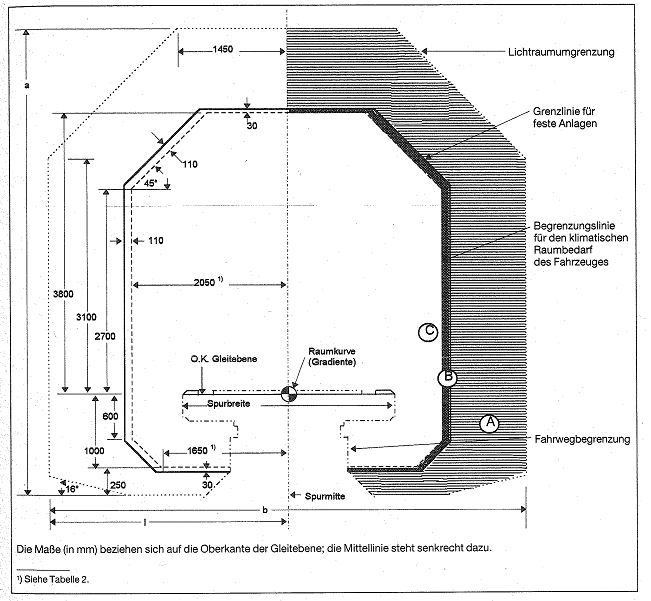
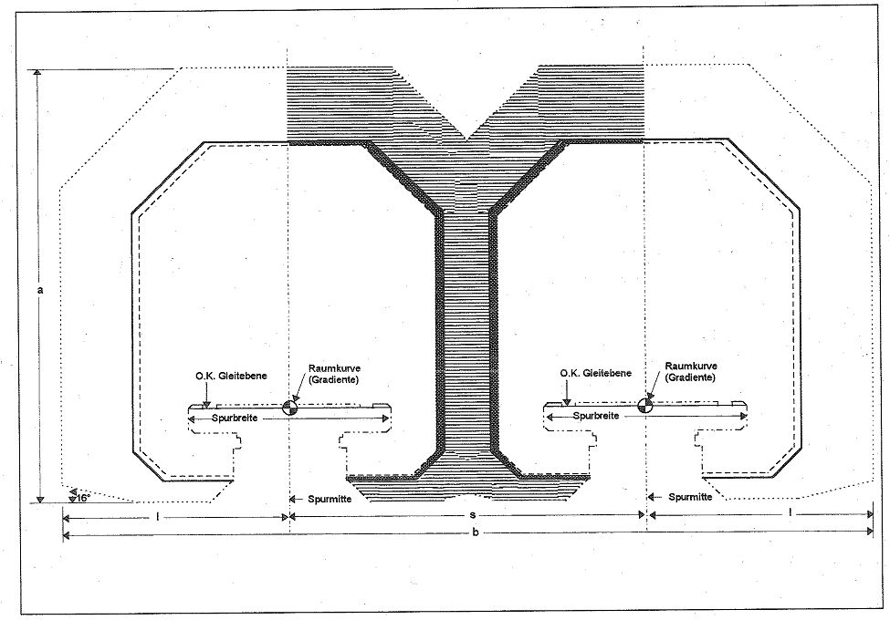
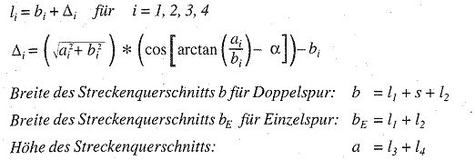
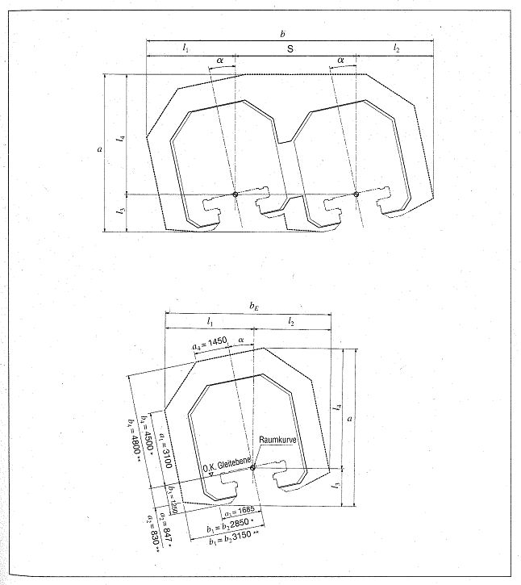

(Fundstelle: BGBl. I 1997, 2329 - 2337)
Bild 1: Lichtraum beim einspurigen Fahrweg in der Geraden und in Bogen von 350 m und mehr

Bereich A: Zulässig sind Einragungen von baulichen Anlagen, wenn es der Magnetschwebebahnbetrieb erfordert (z.B. Bahnsteige, Weichen, Rettungsstege), sowie Einragungen bei Bauarbeiten, wenn die erforderlichen Sicherheitsmaßnahmen getroffen sind.
Bereiche B (Raumbedarf für Toleranzen des Fahrwegs und dessen Linienführung) und C (Kinematischer Raumbedarf des Fahrzeugs): Zulässig sind Einragungen nur während des Fahrgastwechsels sowie während des Reinigens und der Instandhaltung von Fahrzeugen.
Zu Bild 1
Tabelle 1: Geschwindigkeitsabhängige Maß des Lichtraums
| Fahrzeuggeschwindigkeit | bis 300
[km/h] | bis 400
[km/h] | bis 500
[km/h] |
| halbe Lichtraumbreite I | 2,85 m | 2,85 m | 3,15 m |
| Breite des Streckenquerschnitts b | 5,70 m | 5,70 m | 6,30 m |
| Mindesthöhe a | 5,75 m | 5,75 m | 6,05 m |
Tabelle 2: Vergrößerung des Abstands der Begrenzungslinie für kinematischen Raumbedarf des Fahrzeugs im Gleisbogen mit Radien von 350 m bis 3500 m
| Bogenradius | Erforderliche Vergrößerung der halben Breitenmaße des von der Begrenzungslinie umschlossenen Raumes
|
| an der Bogeninnenseite | an der Bogenaußenseite |
| m | mm |
| von 350 m bis 3500 m | 0 | 60 |
Spurbreite ist der Abstand zwischen den beiden Außenflächen der Seitenführschienen einer Spur; das Grundmaß beträgt für Bahnen des öffentlichen Verkehrs 2800 mm mit einer zulässigen Abweichung von ± 2 mm.
Bild 2: Lichtraum beim doppelspurigen Fahrweg in der Geraden und in Bogen von 350 m und mehr

Zu Bild 2
Tabelle 1: Geschwindigkeitsabhängige Maße des Lichtraums
| Fahrzeuggeschwindigkeit | bis 300
[km/h] | bis 400
[km/h] | bis 500
[km/h] |
| Spurmittenabstand s | 4,40 m | 4,80 m | 5,10 m |
| halbe Lichtraumbreite I einer Spur | 2,85 m | 2,85 m | 3,15 m |
| Breite des Streckenquerschnitts b | 10,10 m | 10,50 m | 11,40 m |
| Mindesthöhe a | 5,75 m | 5,75 m | 6,05 |
Bild 3: Lichtraum beim geneigten ein- und doppelspurigen FahrwegBerechnung der Breite des Streckenquerschnitts für Doppelspur b und Einzelspur bE sowie der Höhe des Streckenquerschnitts a in Abhängigkeit von der Querneigung α:

Das geschwindigkeitsabhängige Maß des Spurmittenabstands und die Vergrößerung des Abstands der Begrenzungslinie an der Bogenaußenseite in Gleisbogen mit einem Radius von 350 m bis 3500 m sind der Tabelle 1 zu Bild 2 sowie der Tabelle 2 zu Bild 1 zu entnehmen.
